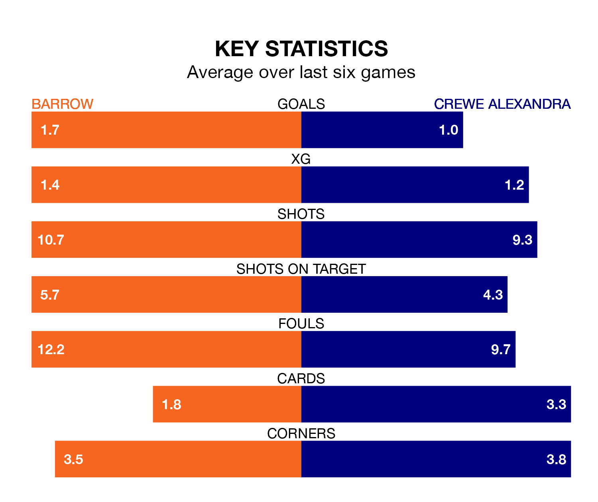

Crewe Alexandra face a challenge to maintain their high-scoring form away against a tight Barrow defence on Saturday.
With 50 goals in 27 games, Crewe are the joint-fourth-highest scorers in EFL League Two ahead of the 3pm kick-off at the SO Legal Stadium.
They face a Bluebirds side who have scored 40 in 27 matches, but conceded only 26 goals, putting them second among the league's tightest defences – only Mansfield Town have conceded fewer goals.
Barrow are fourth in the table after 27 games, of which they have won 13 and drawn 10, earning 49 points.
Crewe are one place behind the Bluebirds in fifth, with 13 wins and eight draws putting them on 47 points.
With Paul Farman between the sticks, the hosts can rely on one of the league's safest pair of hands. He has kept nine clean sheets in his 25 appearances this season in EFL League Two.
In the Railwaymen's net, Harvey Davies has four clean sheets in 21 games. He has conceded a goal every 63 minutes, 60% more often than the 98 minutes between goals for Farman.
In the last three years, Barrow and Crewe have played each other on three occasions. Barrow won two of them and Crewe one.
Their last meeting was on December 22, when Barrow won 3-1 away.
Barrow are in mixed form in EFL League Two, with two wins and three draws from their last six games.
With three wins and a draw over that period, the away team's form is slightly better – they have taken 10 points from 18, compared to Barrow's nine.
Barrow's last match was on January 13, a 2-2 draw against Sutton United, with Ben Whitfield and Niall Canavan getting the goals for the Bluebirds.
Crewe beat Swindon Town 2-1 last time out, also on January 13, with Courtney Baker-Richardson and Elliot Nevitt on the scoresheet.
Updated: 14:53 (UTC), 16/01/24